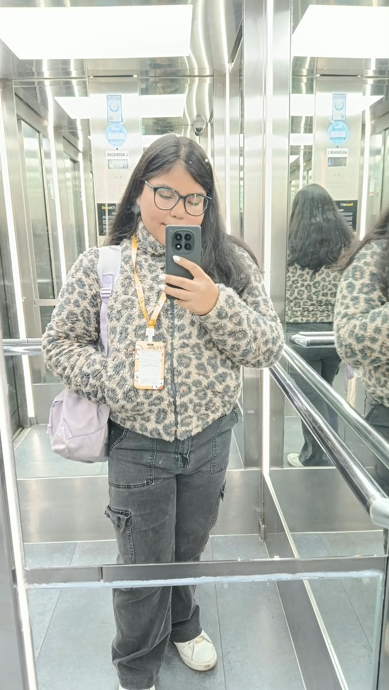

Katalina Alvarado
Técnico en Marketing Digital
Me gusta transformar ideas en estrategias digitales que conecten. Ayudo a emprendimientos y marcas a potenciar su presencia en redes sociales, crear contenido atractivo y construir una identidad digital que destaque.